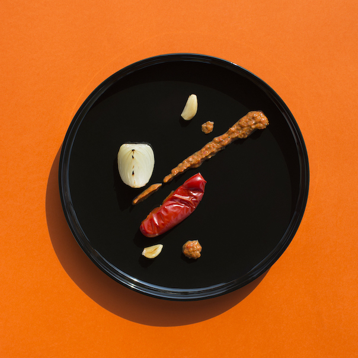

Roasted Vegetable Paste

Description
Time 15 min + 40 min (roasting and cooling)
Servings: 14 — 100 kcal
Inspiration: agamasmaka.pl
Ingredients
- baking paper
- 8 cloves garlic
- 2 large onions
- 2 large bell peppers
- 12 sun-dried tomatoes in oil
- 6 tbsp extra-virgin olive oil
- 1 tsp parsley
- 1 tsp basil
- 1 tsp salt
Steps
- baking paper
- Line a baking tin with paper
- Set the oven to 340°F / 170°C (upper and lower heat)
- garlic
- Peel
- Spread on the baking tin
- onions
- Peel
- Cut in quarters
- Spread on the baking tin
- bell peppers
- Peel
- Cut in quarters
- Remove seeds
- Spread on the baking tin
- -
- Put in pre-heated oven
- Roast
- Let them cool
- Peel the pepper
- Place the vegetables in a bowl
- sun-dried tomatoes
- Drain the oil
- Place in a bowl
- olive oil, parsley, basil, salt
- Add
- Blend using hand blender